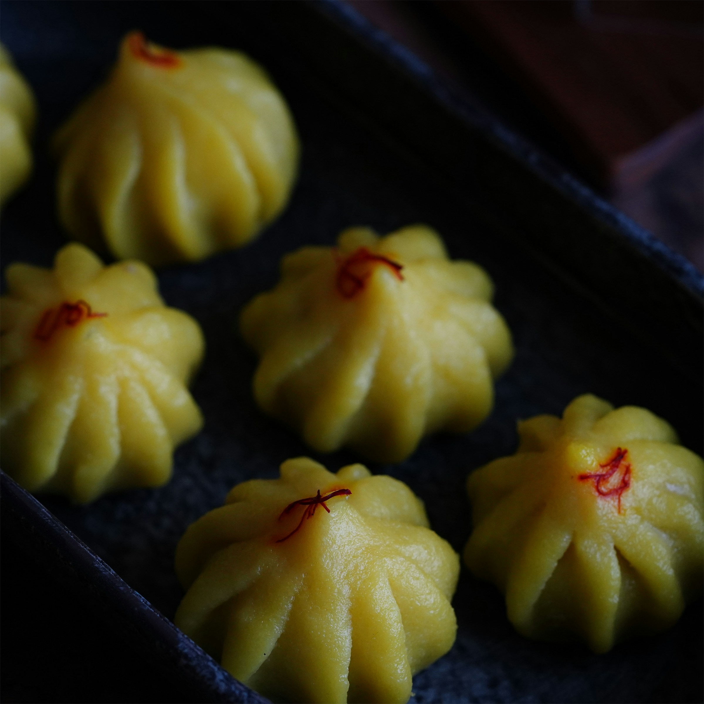

Photo by Prchi Palwe on Unsplash
Modak Recipe
Description
Modak is a traditional Indian sweet dumpling, popularly prepared during the festival of Ganesh Chaturthi as an offering to Lord Ganesha. These delicate, steamed treats feature an outer covering made from rice flour, filled with a delicious mixture of grated coconut, jaggery, cardamom, and nuts. Soft, aromatic, and mildly sweet, modaks are cherished both spiritually and gastronomically across India.
Ingredients
- 1 cup rice flour
- 1¼ cups water
- Pinch of salt
- 1 teaspoon ghee or oil
- 1 cup grated fresh coconut
- ¾ cup jaggery, grated
- ½ teaspoon cardamom powder
- 2 tablespoons chopped nuts (cashews or almonds)
Steps
- Heat a pan, add coconut and jaggery; cook on medium heat till jaggery melts and mixture thickens slightly.
- Mix in cardamom powder and nuts; remove from heat and let it cool.
- In another pan, boil water with salt and ghee. Reduce heat, gradually add rice flour, stirring continuously to avoid lumps.
- Remove dough from heat, knead while warm into a smooth, non-sticky dough.
- Divide dough into small balls, flatten into thin circles, place coconut filling in the center, then shape into modaks by pinching edges together.
- Steam modaks in a steamer or pressure cooker (without whistle) for 10-12 mins until cooked.
- Serve warm with a drizzle of ghee.